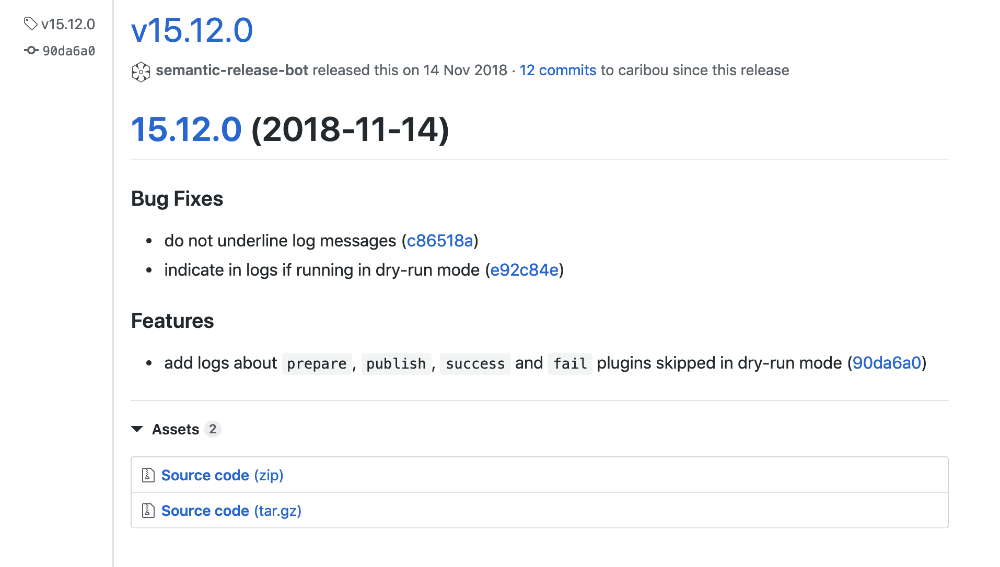

Git commits and versioning!
by Tobias Linkohr
(github)
Git commits
Simple
<type>: <subject>
feat: Add age
Extended
<type>(<scope>): <subject>
<BLANK LINE>
<body>
feat(user): Add age
Add age field to all premium users.
Rules - type
| 💍 test | Adding missing tests |
| 🎸 feat | A new feature |
| 🐛 fix | A bug fix |
| 🤖 chore | Build process or auxiliary tool changes |
| ✏️ docs | Documentation only changes |
| 💡 refactor | A code change that neither fixes a bug or adds a feature |
| 💄 style | Markup, white-space, formatting, missing semi-colons... |
Rules - subject
| ☝️ | Imperative | Use the imperative mood |
| -> written as if giving a command or instruction | ||
| 👼 | Short subject | Max. 50 character subject |
| 🔊 | Capitalize | First letter in subject |
| 🧐 | No period | At the end of the subject |
| ⏱ | Present | No future no past |
❌ Don'ts ❌
feat(user): New age field added
feat(user): added age
feat(user): Add age.
feat(user): Adds age
feat(user): Add age to the profiles and other sides
What we do now

✅ Dos ✅


Semantic versioning - semver
The Numbers
1.3.6
MAJOR.MINOR.PATCH
BREAKING.FEATURE.FIX
MAJOR version when you make incompatible API changes
MINOR version when you add functionality in a backwards-compatible manner
PATCH version when you make backwards-compatible bug fixes
Tooling
semantic-release generates release note and number on each master merge/pull